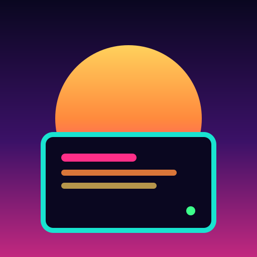

Sunset
Ticker
✓
Pick the PDF to present. It stays on this laptop.
Open Sunset Ticker on your iPhone, then scan the code or type it. The PDF stays on this laptop.
- →←PgUpPgDnSpace
- Change slide
- B
- Black screen
- F
- Full screen
Pick a PDF and your QR code appears here
Room code
--- ---
Scan with the iPhone Camera, or type the code in the Sunset Ticker app.
Waiting for your phone